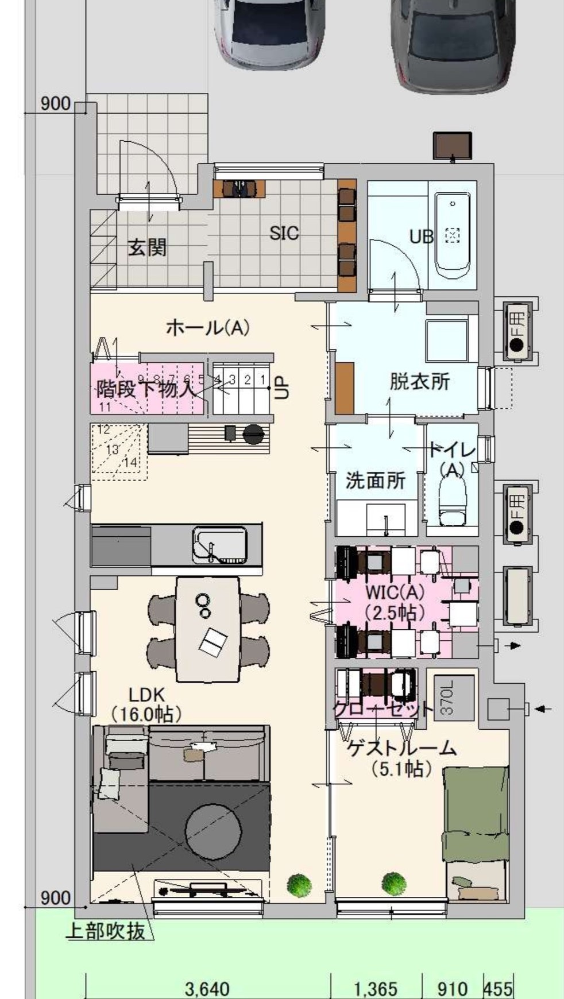
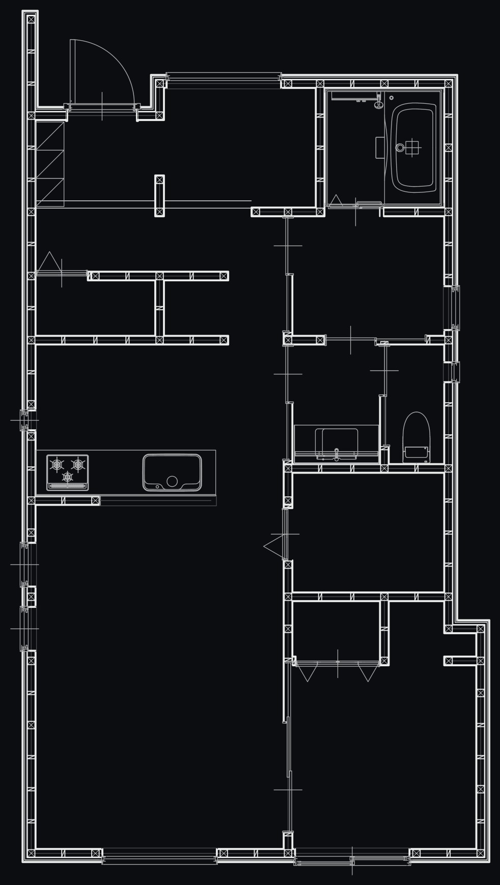
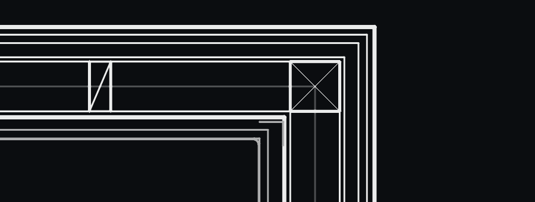
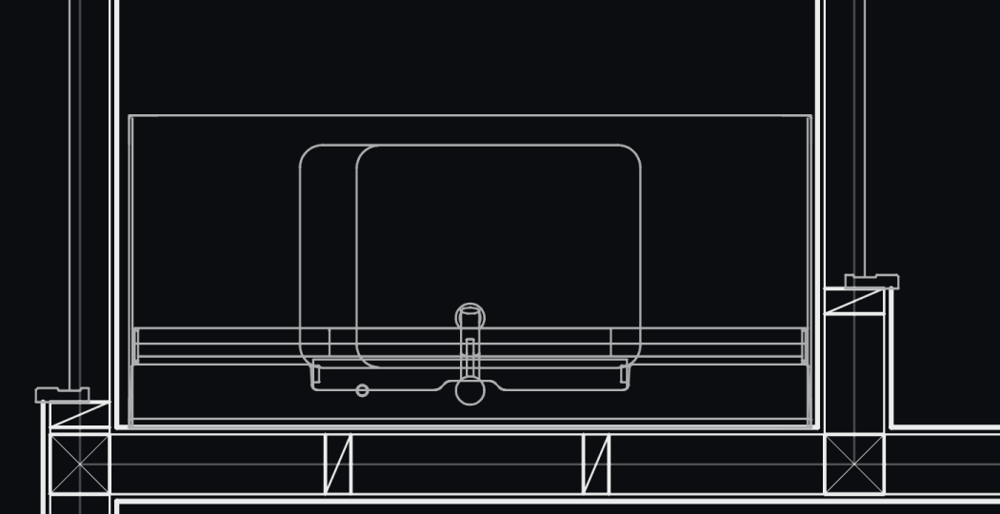
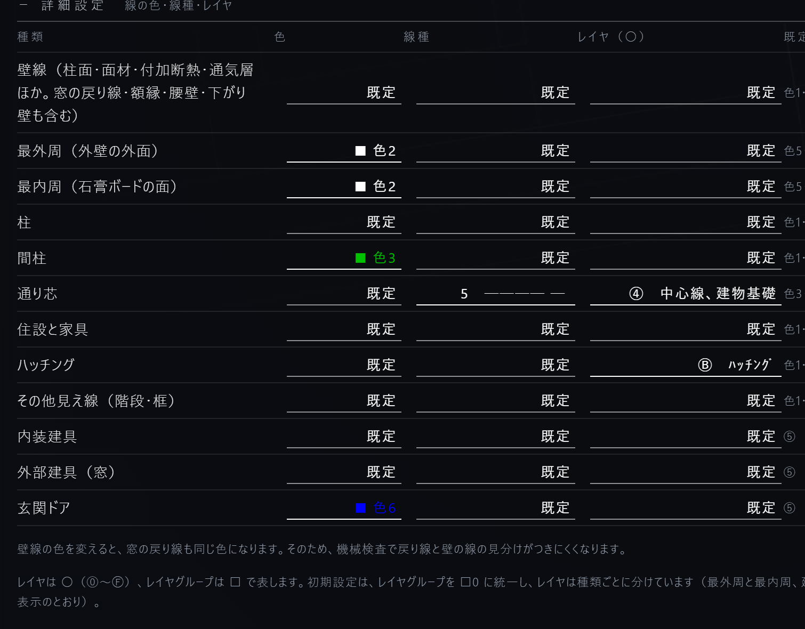

平面図から、
JW_CADデータへ
3D CADで出力した平面図（画像）から、壁・建具を自動判別し、木造軸組構法のJW_CAD図面（.jww）を生成します。



図面を読み込むPDF・画像をドラッグ＆ドロップ
仕様を設定する壁厚・部品・線属性を指定
図面を出力する階ごとの .jww と検査結果
ダウンロードする出力した .jww を保存
3D CADで出力した平面図（画像）から、壁・建具を自動判別し、木造軸組構法のJW_CAD図面（.jww）を生成します。


外壁・通気層・付加断熱・面材の各層厚を、数値で指定できます。出隅部も、指定した層構成どおりに線を納めます。

建具（窓・ドア・玄関ドア）と住設（キッチン・洗面台・UB・便器）を、メーカー・商品・サイズを指定した部品で作図します。

壁線・最外周・最内周・柱・間柱・通り芯・住設と家具・ハッチング・見え線・内装建具・外部建具・玄関ドアの各線について、線色・線種・レイヤを指定できます。未指定の項目は、既定値で作図します。

本ツールは無償で提供しています。出力内容の確認と、利用の判断は、利用者が行うものとします。利用により生じた損害について、作者は責任を負いません。
出力形式は、JW_CAD図面データ（.jww）です。
画像の読み取りでは、誤判定が生じる場合があります（建具の種別・開き勝手、壁の層構成など）。出力図面は、JW_CAD上で確認・修正のうえ、使用してください。
Windows ／ Python 3.13 ／ JW_CAD
記載の製品名は各社の商標または登録商標です。本プログラムは各社と関係のない、個人による非公式のツールです。
問い合わせフォームから受け付けます。
本ページはプロモーション（アフィリエイト広告）を含みます。